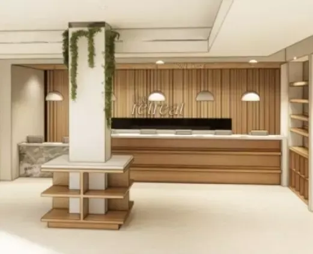

Life in Jersey City can feel nonstop. From the moment we start the day, we’re hit with the constant movement, noise, and pressures of navigating big city life. Paired with the daily responsibilities of work, family, and friends, it’s tough to keep up.
The Retreat acts as a departure from the hustle and bustle. More than just a cannabis dispensary, community and wellness are at the core of our story.
The Retreat Founders Natalie and Alex have a passion for modern wellness, eventually evolving into their shared love for cannabis. With Jersey City as their home base, the duo recognizes the importance of community and how The Retreat fits into the bigger picture.
“Our new home deserves the safety of our retreat,” the founders write. “As we succeed, we extend the same kindness offered to us outward to our community.”
As a woman-owned dispensary in Jersey City, The Retreat is forging a new path forward. We aren’t focused on the grind and hustle of legal cannabis. It isn’t about luxury or exclusivity, either. Instead, our approach is rooted in wellbeing, softness, accessibility, and care.
Stop by, and you’ll see what we mean. Otherwise, keep reading to see what sets our dispensary apart:
Why Being a Woman-Owned Dispensary Matters
Photo by Joel Muniz on Unsplash
Since the first states moved to legalize recreational cannabis over a decade ago, we’ve seen an immense amount of progress in the broader industry. Even so, today’s cannabis industry has so much untapped potential to continue evolving.
Legal cannabis has been, and remains, a male-led industry. The country’s first recreational shops had a more transactional, pharmaceutical vibe. This atmosphere persists today — a stark contrast to the chill, communal elements of cannabis consumption many of us know and love.
But stoner stereotypes now feel outdated. With increasing access to legal cannabis and education surrounding its potential benefits, the “typical” cannabis consumer no longer exists.
As of 2024, data shows that more than one in three American women consume cannabis, meaning there are more female cannabis consumers than males. Women and men also tend to consume cannabis for different reasons. While the market has shifted to reflect these developments, women only account for 39% of cannabis executives per a recent industry report.
While this is an improvement compared to previous years, cannabis is still a male-dominated industry. As leaders and consumers, it’s clear that women are shaping the future of the industry.
At The Retreat, “woman-owned” is more than just a label; it’s a lens that shapes every decision. Our Jersey City dispensary is a challenge to those outdated industry norms. We’re here to support any and all consumers, whether you’re after a solid slumber for the evening or the perfect vibe for a night out.
Meet the Founder, Natalie Benson
Natalie Benson is the woman behind The Retreat. Her ongoing commitment to community and cannabis is evident in her past work as the founder of Massachusetts-based cannabis brand Garden Mother, and with more than two years working in the dispensary industry.
Beyond cannabis, Natalie forged a community online as an influencer with hundreds of thousands of followers across Instagram and TikTok. Known for sharing raw, authentic experiences from her real life, Natalie has a deep understanding of community and trust that radiates through The Retreat.
As a cannabis leader, Natalie blends business acumen, cultural influence, and wellness-forward values. Pay us a visit, and you’ll quickly witness Natalie’s commitment to making The Retreat a transformative force for positive change.
The Retreat Creates Space for Rest, Not Rush
Photo by Lindsey Franzke on Unsplash
The Retreat is named for the unique way every individual experiences “retreat.” More than just a cannabis dispensary, we are a modern wellness company placing wellbeing, rest, and recovery at the forefront. You might find your own retreat in the comforting atmosphere of our store or in the moments sharing cannabis products with friends.
We all have our reasons to reset and slow down, but Natalie recognizes the need for safe, calming spaces firsthand. “As a new mom, I know time is precious,” she says. “I want everyone to feel welcomed to stay and relax or be in and out to get back to their day.”
For everyone, not just women, true rest can be a rarity. The Retreat is curated with that in mind, offering reprieve the moment you step inside. Our store interior is designed to usher a sense of calm, welcoming guests with comfort and emotional ease. No rushed interactions here: We’re committed to giving everyone the time, attention, and care they need to find the best options for their unique needs and wellness goals.
A Jersey City Dispensary Rooted in Softness
Wellness is not gendered. As a woman-owned recreational dispensary, we recognize the expansive nature of cannabis and the many ways we can all benefit from this plant.
Whether you’re a seasoned consumer or just beginning to dip your toes in, The Retreat is a safe place to embrace wellness. Our dispensary isn’t loud, flashy, intimidating, clinical, or cold. We aren’t focused on numbers or getting you in and out as fast as possible.
We’ll meet you where you’re at and help you navigate the road ahead. No matter who you are, you deserve rest and softness in your life.
A Relationship-First Dispensary Experience
At The Retreat, we reimagine the role of the “budtender.” Our staff members aren’t salespeople; they aren’t here to sell to you, but rather to support your wellness journey.
Think of our budtenders as guides, ready to build a relationship with you and better understand your individual needs. Before we even consider the best products for you, we want to get to know you better. We all bring our own experiences to the table, along with our own unique reasons for consuming cannabis.
No pressure, no upselling, and no judgment. At The Retreat, understanding your personal goals, comfort level, and lifestyle needs is our top priority when recommending products.
Curated New Jersey Cannabis with Intention and Diversity
Our intentional approach extends to every part of our operation, including our inventory. Across our menu at The Retreat, you’ll find women-owned brands and local New Jersey options, alongside some of the most iconic and trusted cannabis companies across the country.
As cannabis research expands our collective insights on the plant’s benefits, the industry has a growing number of products fit for specific needs. Our shelves reflect it all, from the most accessible options for the canna-curious to premium staples for seasoned consumers. The Retreat chooses each product with care and intention, not for the hype.
Visit Our Woman-Owned Dispensary in Jersey City

As the state’s cannabis industry blossoms with new options around Jersey City and beyond, The Retreat is your place to exhale. Our cannabis dispensary is designed with intention, softness, and care. We’re not just here to sell you cannabis but to guide your ongoing wellness journey.
Visit our woman-owned dispensary in Jersey City to experience our unique approach firsthand. No matter who you are, your cannabis experience, or your specific goals, let The Retreat act as your personal wellness sanctuary.
Check out our online menu to see what we have to offer, or stop by in-person at our Grand Street location! We’re immensely grateful to be part of Jersey City’s cannabis community and can’t wait to traverse this journey together!